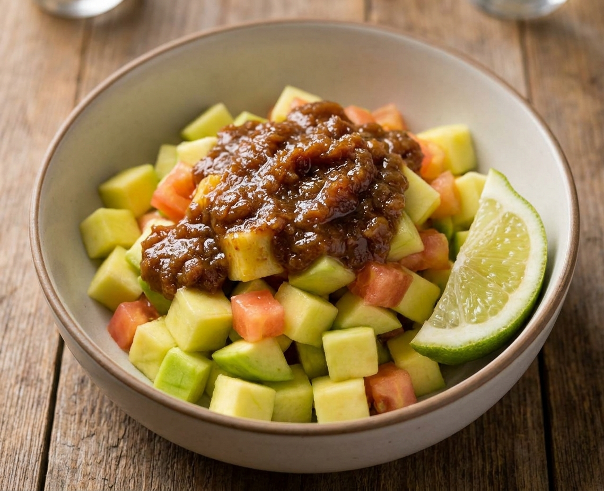

|
Calamari |
Crispy, golden-brown rings of tender squid lightly dusted in seasoned flour and flash-fried to perfection. |
 |
Green Mango Salad |
A refreshing and vibrant local salad featuring crisp, diced green mangoes tossed with juicy diced tomatoes and a wedge of fresh lime, generously topped with savory, sweetened shrimp paste for an irresistible balance of tart, sweet, and umami flavors. |
 |
Tuna Tartare |
Freshly diced, high-grade raw tuna seasoned with savory aromatics and delicate herbs, topped with sesame seeds and microgreens, served alongside a rich sauce smear and crispy, golden-brown fried sweet potato strips. |